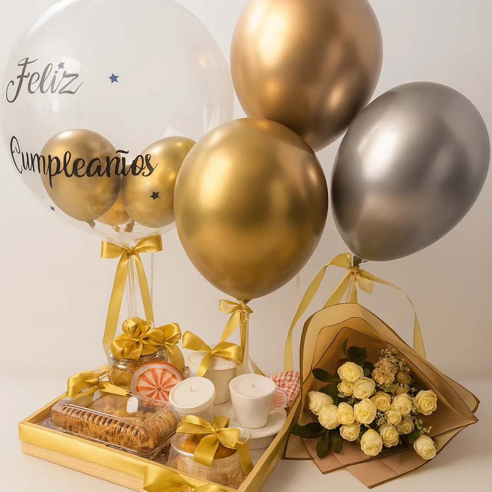
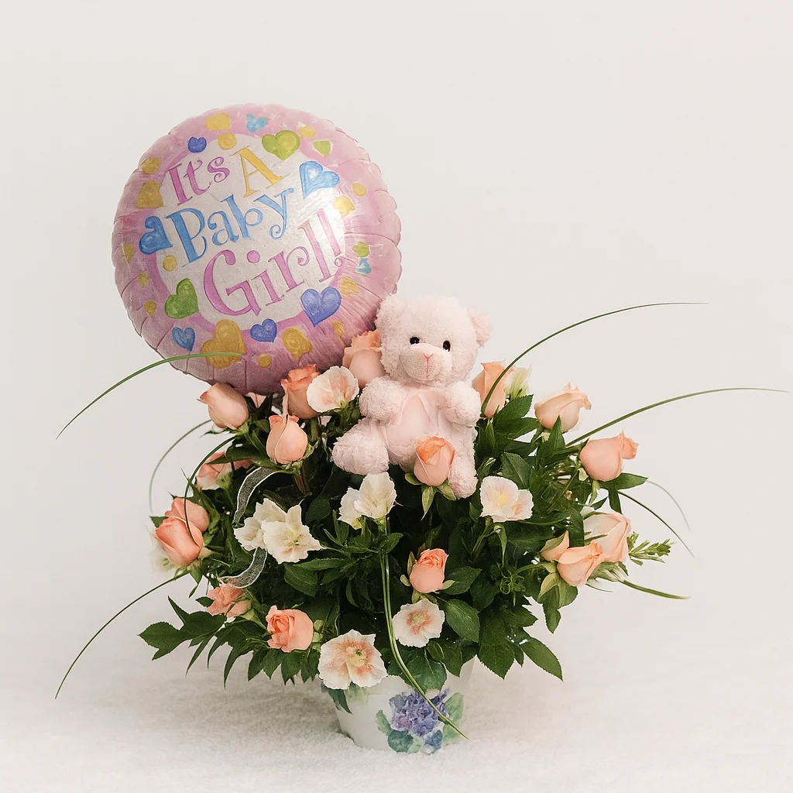
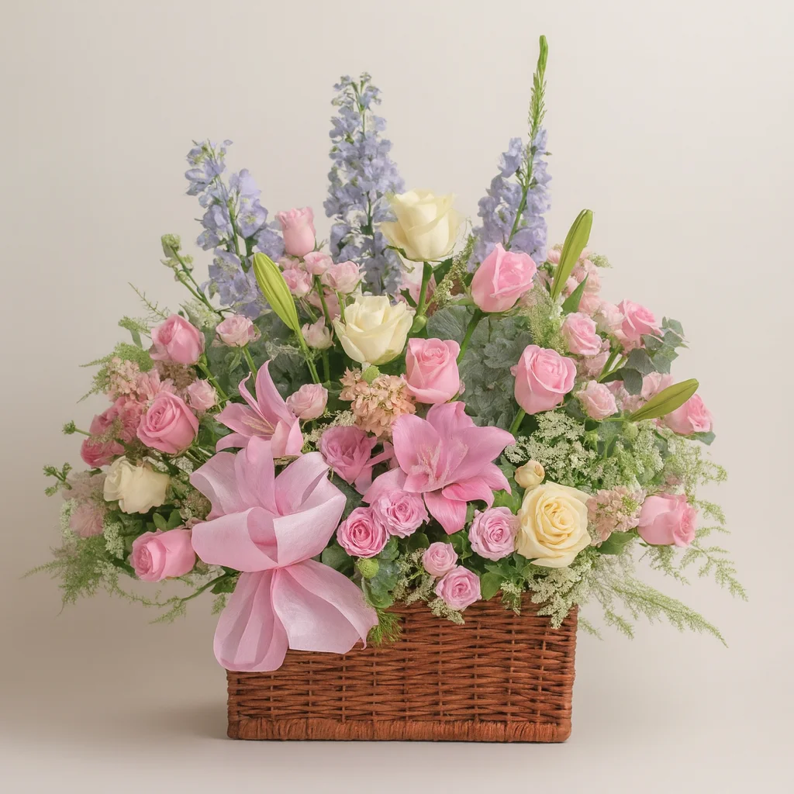

Desayunos Sorpresa
Pensamos cada desayuno sorpresa como una canasta temática que arranca el día con cariño, alegría y sabores deliciosos; es ideal para aniversarios celebrados en la mañana, cumpleaños importantes, Día de la Madre, San Valentín o, sencillamente, para mostrarle a alguien lo mucho que te importa apenas se despierta. Todas incluyen un arreglo de flores frescas de temporada en tonos vivos y alegres que activan los sentidos, panes artesanales recién salidos del horno con un aroma difícil de resistir, café gourmet colombiano escogido para cada ocasión y antojos de la mañana como croissants, muffins, galletas hechas a mano y mermeladas premium. Todo llega impecablemente presentado en canastas de mimbre natural o en recipientes elegantes que se pueden reutilizar, adornados con cintas alusivas a la fecha y tarjetas personalizadas. Tenemos versiones para todos los planes: desde desayunos íntimos para dos hasta opciones familiares abundantes, alternativas veganas y sin gluten, e incluso formatos corporativos para consentir a tu equipo de trabajo o a clientes especiales. Entregamos cada desayuno sorpresa en la franja de la mañana que acordamos contigo, para que todo llegue fresco y quien lo recibe quede encantado desde el primer minuto del día.


Canastas de Frutas y Flores
Nuestras canastas de frutas y flores unen salud, belleza natural y buen gusto, y son perfectas para quienes aprecian el bienestar, la comida sana y una estética cuidada en un mismo regalo inolvidable. Cada una es una verdadera obra de arte que se puede comer: reunimos frutas frescas de temporada escogidas una a una por su calidad, su sabor y su aspecto, y las acompañamos con flores que resaltan sus colores naturales para lograr un conjunto visual sorprendente. Incluimos frutas exóticas como pitahaya, maracuyá, uchuva y mango, además de clásicas como manzana, pera, uva y fresa, todas acomodadas con arte entre girasoles, rosas, astromelias y follajes decorativos. Según el estilo que prefieras, la armamos en canastas tejidas a mano, cajas rústicas de madera o recipientes modernos, con papel de seda natural y cintas orgánicas. Son ideales como regalo empresarial que demuestra interés por el bienestar de colaboradores y clientes, para alguien que se está recuperando, para felicitar por un logro deportivo o académico y para consentir a quienes cuidan su alimentación. Todas traen información nutricional de las frutas que contienen y recomendaciones de conservación para disfrutar el regalo al máximo.
Canastas para Bebés
Nuestras canastas para bebés son regalos florales especiales, creados para festejar la llegada de un nuevo integrante y acompañar a la familia en uno de los momentos más emotivos e importantes que vivirá. En cada una unimos la delicadeza de las flores con artículos útiles y bonitos para el recién nacido, de modo que el obsequio resulta práctico y, a la vez, lleno de significado. Para los arreglos usamos flores suaves en tonos pastel, como rosas blancas y rosadas, lirios blancos, baby breath y flores de temporada en colores tiernos que evocan inocencia y pureza. Entre los artículos para el bebé hay ropita de algodón orgánico en tallas recién nacido y 0-3 meses, baberos bordados, cobijas suaves hipoalergénicas, productos de aseo para piel sensible, juguetes certificados de estimulación temprana, chupos de silicona libres de BPA y peluchitos de materiales seguros. Ajustamos cada canasta al género del bebé, o la hacemos en colores neutros si es sorpresa; agregamos tarjetas de felicitación pensadas para los papás y te damos la opción de bordar el nombre del bebé en algunas piezas. Todo va en recipientes reutilizables que luego sirven para organizar las cosas del bebé, adornados con cintas de raso y papel seda en colores combinados, para lograr una presentación memorable y perfecta para las fotos de este momento tan especial.


Canastas Gourmet
Nuestras canastas gourmet son lo más sofisticado en regalos florales: unen flores premium con una cuidada selección de productos delicatessen pensada para los paladares más exigentes y refinados. Cada una ofrece una experiencia gastronómica completa, con arreglos elegantes de orquídeas, rosas de jardín, peonías o flores exóticas según la temporada, acompañados de productos gourmet importados y nacionales de primera calidad. La propuesta gastronómica reúne quesos artesanales madurados, embutidos premium, aceite de oliva extra virgen, vinagre balsámico añejado, chocolates belgas o suizos, vinos escogidos de bodegas reconocidas, champaña para las grandes ocasiones, patés y terrinas francesas, mermeladas artesanales de frutas exóticas, frutos secos premium, además de crackers y panes gourmet. Expertos en gastronomía eligen cada producto y lo combinan con cuidado para lograr una experiencia sensorial redonda. Son ideales para regalos empresariales de alto nivel, aniversarios importantes, cenas románticas, agradecimientos a clientes VIP, celebraciones de directivos o cualquier momento que pida un detalle de máxima distinción. Las presentamos en cajas de madera fina, cestas de mimbre premium o empaques de lujo que después quedan como piezas decorativas, junto con tarjetas que cuentan el origen y las características de cada producto incluido.